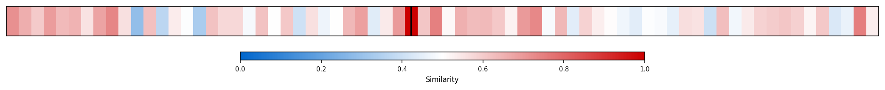
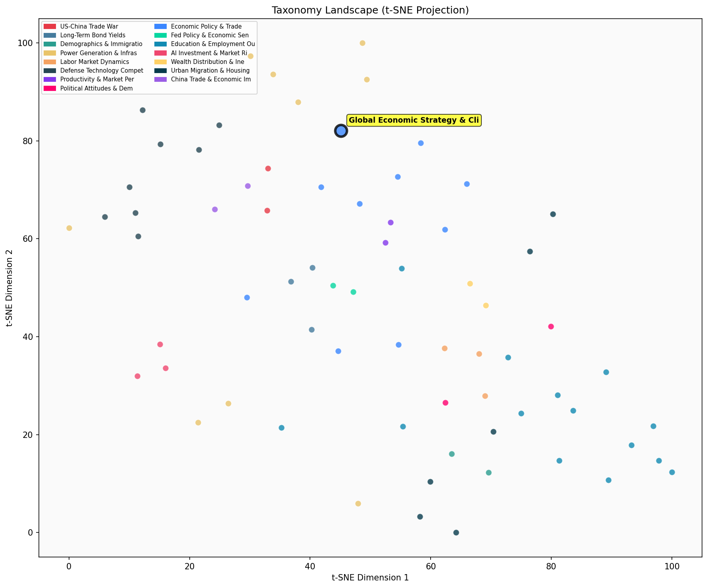

Description
This subcluster examines the intersection of global economic strategy with climate and trade policy, focusing on how environmental initiatives reshape international economic relationships. Articles analyze the costs and trade-offs of decarbonization policies, geopolitical impacts on trade flows, and strategic economic positioning amid climate transitions. Common sources include academic economists, policy researchers, and think tank analysts who provide quantitative assessments of policy scenarios. Unlike its sibling subcluster which emphasizes comparative economic performance metrics, this grouping prioritizes strategic policy choices and their long-term economic implications in a climate-constrained world.
Similarity to All 70 Subclusters
Each cell represents a subcluster. Color intensity shows similarity (blue=low, red=high). Black line marks current subcluster position.
Relationship to Primary Clusters
Average similarity to each of the 15 primary clusters. Larger area = stronger relationship to that cluster.
Taxonomy Landscape
All 70 subclusters positioned by similarity (t-SNE). Current subcluster highlighted with label. Click to enlarge.
Network Connections
Current subcluster at center, connected to related subclusters. Line thickness = similarity strength.
Most Representative Articles
-
1. Bjorn Lomborg's analysis highlights the economic implications of global warming remediation, emphasi
-
2. According to the Intergovernmental Panel on Climate Change a global temperature rise of 5°F would re
-
3. .@RogerPielkeJr argues that more realistic projections of global population and GDP growth suggest t
-
4. .@caseybmulligan estimates that decarbonization in the US will result in recurring costs of up to $4
-
5. By 2100, the average person worldwide is projected to be 436% better off compared to 450% without cl
Edge Cases (Boundary Articles)
-
1. The concept of Import Certificates (ICs) aims to balance trade by issuing ICs to U.S. exporters equaThis article is borderline because while it discusses trade policy and international economic relationships through Import Certificates, it lacks any climate or environmental policy component that defines the assigned cluster. The article would fit better in the "China Trade Surplus & Export Growth" cluster since it focuses purely on trade balance mechanisms and export competitiveness without addressing the climate policy intersection that characterizes its current assignment.
-
2. Dollarization might be helpful for Argentina but it doesn't solve the Central Bank of Argentina’s (BThis article is borderline because while it discusses Argentina's monetary policy and debt issues, it focuses narrowly on domestic financial problems (central bank balance sheet, inflation, debt writedown) rather than the broader global economic strategy and climate policy themes that define the cluster. The nearest alternative cluster on "Government Debt Sustainability and Fiscal Deficits" is much more relevant since the article directly addresses Argentina's debt sustainability challenges and fiscal monetary issues without any climate policy connection.
-
3. .@HalBrands argues that Trump intuitively understands that “order flows from power and can hardly beThis article is borderline because it focuses on geopolitical power dynamics and challenging revanchist nations rather than the economic strategy and climate policy intersection that defines the cluster. While it touches on global strategy, it lacks any discussion of environmental initiatives, trade policy, or climate-economic relationships, making it more aligned with general foreign policy or security topics.
Original Dendrogram